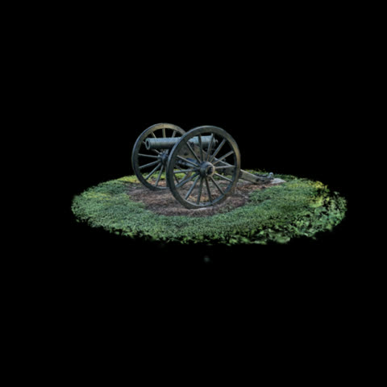

Provenance: The Gun on the Line

Catalog record
Source: working-tree scenes.json; repository base identified below. These are catalog claims.
Scene: wilsons-creek-gun
Place: Wilson's Creek National Battlefield, Missouri
Captured: 2026-08-30
Description: The field gun standing where the line once stood, lifted out of the wider battlefield scan and cropped to itself. The same phone capture that produced the Wilson's Creek scene, read as an object rather than as ground: the piece, its carriage and the grass it sits on, and nothing else.
Catalog splats: 460,973
Capture and export
Operator source summary: Phone capture exported as a 3DGS PLY and held in the studio's hdc-holo data set (782,931 splats); capture date unrecorded, catalog date is the delivery date. Cropped to the subject with tools/clean_export.py.
The summary is supplied with --source and attributed to the quoted history below; it is not a measurement from raw capture files.
Recorded cleaning
Candidate cleaning command/flags recorded at promotion:
--center 0.8494,0.1580,-0.6501 --crop-radius 2.5 --crop-shape ellipsoid --alpha-min 0.10 --scale-ceiling 0.008
Delivered files
scenes/wilsons-creek-gun.sog: SOG, 6,152,323 bytes (6.152 MB); sha256747ba86d2e54265b486edd82375bf502e940cab76c7cd5fd2d080bcbc6b0fee2
Source commit messages
Verbatim repository messages; historical claims may describe earlier versions of a scene.
Source commit: d6a25b16819436268965533450876c1dd872b43b
The best gun in the collection, found by cropping to it instead of near it
A Scaniverse export of the field gun outside the Hulston Research
Library, shot on an overcast day. Every other gun here was scanned in
direct sun and is lit hard on one side and lost on the other; this one
reads from every angle, which is the owner's observation and it is
correct.
I had already looked at this file and reported it as not worth using.
That judgement was wrong and the reason is worth writing down. I cropped
by quantile about the whole scene's weighted centroid, which put a 37 m
box around a 3 m gun, kept trees and lawn, and produced something dark
and sparse that was fairly judged bad. The cloud was never the problem.
The crop was six times too wide.
Cropping to the subject instead settles it in one measurement: 61% of
the alpha mass lies within 2 m of the centre and the curve is flat after
that, so there is a dense compact object sitting exactly there. An
ellipsoid of radius 2.5 m keeps 344,729 splats and 4.6 MB, and the
extent comes out 4.97 m against the battlefield gun's 3.96 m -- the same
object at the same size.
The remaining floaters were a handful of very large splats, and the
scale ceiling did not touch them at first because it is RELATIVE to the
crop radius: --scale-ceiling 0.03 at radius 2.5 means 15 cm, well above
the 21 cm blobs. At 0.008, i.e. 4 cm against a 99.9th percentile of 4.1
cm, they go and nothing else does.
It ships as its own scene rather than replacing research-library, which
is deliberately the grounds -- "tree line, lawn, and the light coming
through" -- and would have been destroyed by a crop to the gun.
Passes every web-mobile check: 344,729 splats, 4.6 MB, floater 0.005%,
fog and translucency zero. The up vector is measured from the grass
sheet, not guessed; promotion refused to infer it at 0.31 inliers
against a 0.35 floor, which was the right call.
Co-Authored-By: Claude Opus 5 <noreply@anthropic.com>
Processing
- Repository HEAD: d6a25b16819436268965533450876c1dd872b43b.
- Sheet generated from the current working-tree catalog and delivered files; HEAD identifies the repository base, not an assertion that this sheet is committed.
- Generated: 2026-09-05T17:22:39+00:00.
- License: CC BY 4.0 unless the commissioning agreement states otherwise.